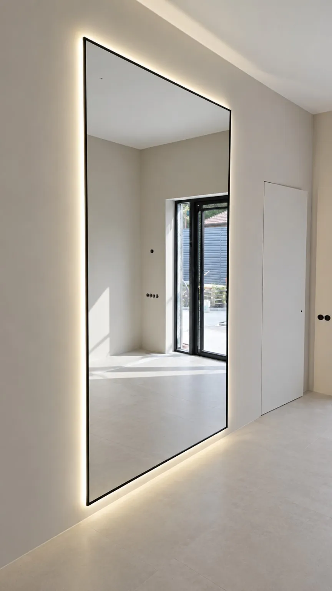

Чёрная рама
Графичный контур хорошо смотрится в светлом интерьере.
В раме · по вашим размерам
Изготовим зеркало в раме под ваш интерьер: выберите размер, цвет рамы, свет и управление, а стоимость увидите сразу в калькуляторе.
Работаем в Мурино, Буграх, Новом Девяткино и Санкт-Петербурге.

Фотографии и визуализации
Графичный контур хорошо смотрится в светлом интерьере.

Тёплый акцент для прихожей и гостиной.

Лёгкая рама для ванной и светлых помещений.
Чёрная, золотая или белая рама: подберите под цвет фурнитуры и отделки.
Укажите ширину и высоту: зеркало изготовим по вашим размерам.
Тёплый, нейтральный или холодный свет, сенсорная кнопка, пульт или взмах руки.
До изготовления согласуем расположение вывода питания и креплений.
Итог зависит от размеров, формы, обработки кромки, подсветки, управления и выбранных услуг. Укажите свою комплектацию в калькуляторе и увидите итоговую стоимость. Детали заказа и условия доставки подтвердим при согласовании.
В калькуляторе доступны варианты рамы. Нужный цвет или материал вне списка уточним отдельно.
Да. Укажите размеры в калькуляторе. Сложную форму по эскизу и возможность изготовления уточним отдельно.
Способ подключения и расположение вывода питания согласуем до изготовления, с учётом вашей стены и розетки.
Да, доставку и установку можно включить при расчёте. Адрес и доступ к месту монтажа согласуем заранее.
Начните с размеров. Итоговую стоимость покажет калькулятор.